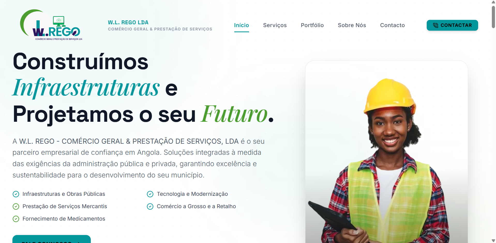

Caso // Website em produção
W.L. REGO — Site institucional
Presença digital da W.L. REGO – Comércio Geral & Prestação de Serviços, Lda: um site novo, público e funcional, pensado para administração pública e privada em Angola.

O problema
A empresa precisava de uma vitrine clara: quem é, o que constrói e como ser contactada — sem depender só de boca-a-boca ou de materiais estáticos.
A solução
- Homepage com posicionamento: «Construímos Infraestruturas e Projetamos o seu Futuro.»
- Navegação por Início, Serviços, Portfólio, Sobre Nós e Contacto, com CTA de contacto visível.
- Áreas de negócio visíveis: obras públicas e saneamento, tecnologia e modernização, serviços mercantis, comércio e fornecimento de medicamentos.
- Tom institucional, alinhado a clientes da administração pública e privada.
Impacto
O site está no ar e serve de ponto de entrada comercial: explica os serviços, mostra a marca e abre o canal de contacto em wlrego.ao.